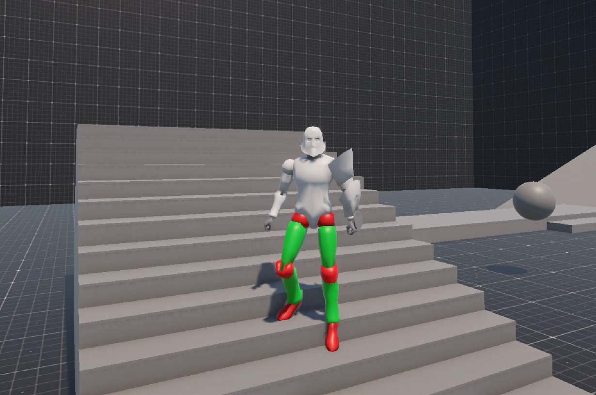

Coding
2023

This procedural foot placement code is my own attempt to solve the problem of placing the feet of a humanoid character correctly on uneven terrain. I am aware that there are different approaches to this problem, but I wanted to develop my own solution and challenge myself to think through the problem from the ground up.
Click on this DOWNLOAD button to get the C# file. The files in the ZIP contain the following small programs. The free program Processing is required to run them:
Instead of relying on information from the animation, I wanted the system to determine the required foot placement from the character's current state and its environment. The approach is divided into four main parts.
• predictive terrain sampling based on foot movement
• continuous foot-ground contact estimation
• root height adjustment based on terrain and leg constraints
• analytical two-bone inverse kinematics
A downward raycast directly below the foot is sufficient for flat or slowly changing terrain, but it can react too late when the character moves onto a higher surface. To anticipate upcoming terrain, the raycast is shifted in the direction of the foot's movement. The amount of this offset is based on the current movement of the foot and is reduced as the foot approaches a planted state. This allows the system to detect a step before the foot reaches it and use the result as the target for the foot.
The detected ground should not always immediately influence the foot, since a foot that is currently moving through the air should remain largely controlled by the animation. I therefore estimate the degree of contact from the foot's current height and orientation relative to its original state. These measurements produce a continuous grounding weight, which determines how strongly the foot transitions toward the detected ground position.
Adjusting the feet alone is not sufficient when the difference in terrain height becomes too large. A higher step can force the leg into an unnatural configuration or bring the foot too close to the pelvis. The system therefore evaluates the relative ground heights and the available distance between the pelvis and the feet. When necessary, the character's root is raised to provide a more plausible leg configuration, while the correction is smoothed over time.
Once the target position of each foot has been determined, the leg needs to be reconstructed around it. Since the leg consists of two main segments, the thigh and shin can be treated as two sides of a triangle connecting the pelvis and foot. Using the lengths of these segments and the distance to the target foot position, the required knee angle can be calculated directly. The resulting rotations are then applied to the thigh and shin to reach the target without using a general-purpose IK solver.